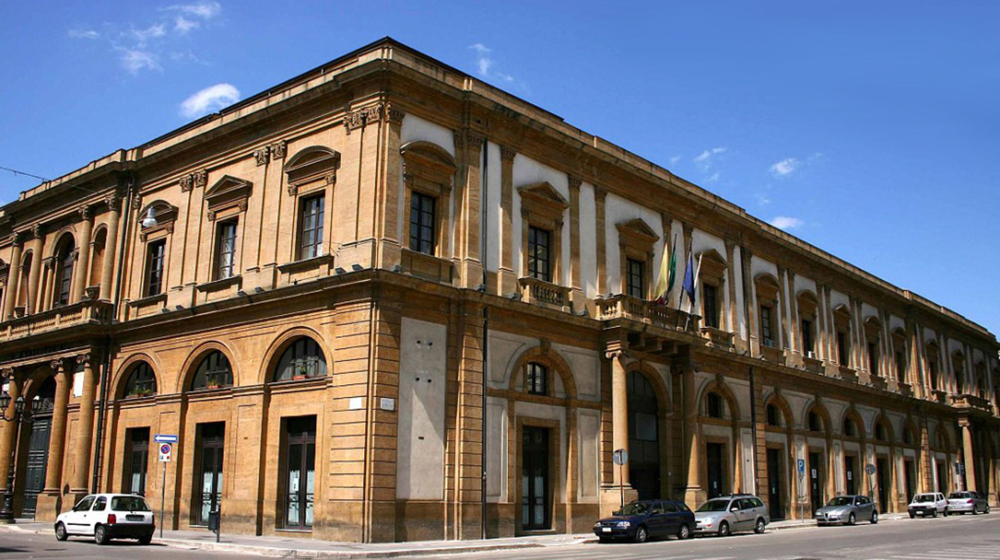
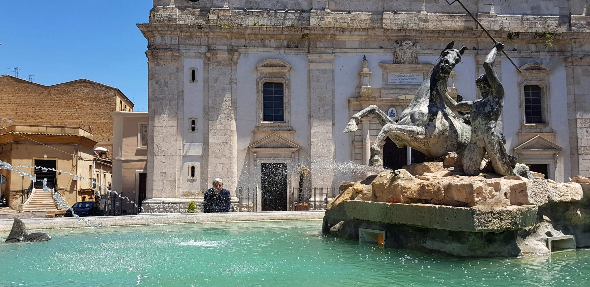
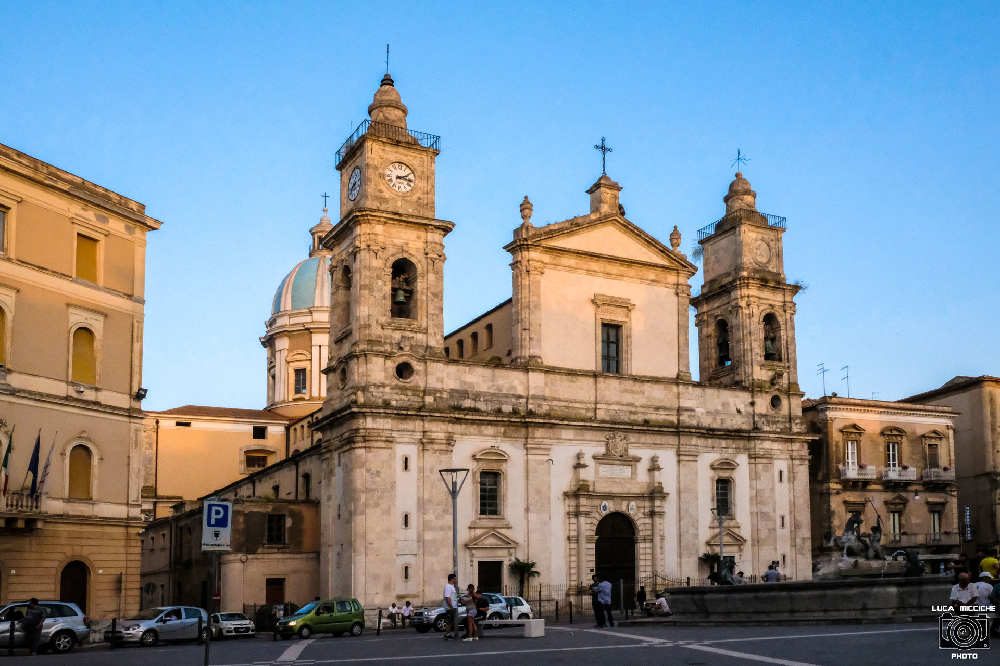

Piazza Garibaldi a Caltanissetta rappresenta il baricentro storico e sociale dell'intera isola, situata nel punto esatto in cui si incrociano i due assi principali che tagliano il centro abitato. La sua conformazione attuale è il risultato di un'importante trasformazione urbanistica ottocentesca che ha aperto lo spazio medievale per farne il "salotto buono" della città, simbolo dell'ascesa economica legata all'epoca delle miniere di zolfo. La piazza è caratterizzata da un'atmosfera solenne e raccolta, dove le facciate concave e i palazzi istituzionali riflettono l'eleganza del tardo barocco e del neoclassico siciliano.

Cosa Visitare

Cattedrale di Santa Maria la Nova: maestosa chiesa che custodisce al suo interno
gli spettacolari affreschi del fiammingo Guglielmo Borremans.

Fontana del Tritone: scultura bronzea monumentale di Michele Tripisciano, che
raffigura un tritone nell'atto di domare un cavallo marino.

Palazzo del Carmine: antico complesso monastico oggi sede del Municipio, che
ospita anche il prestigioso Teatro Regina Margherita.